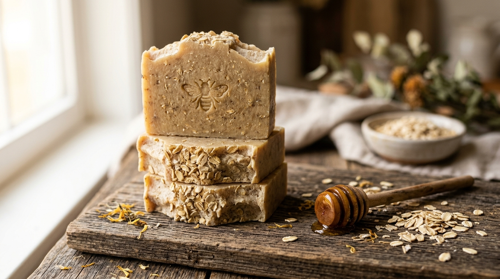
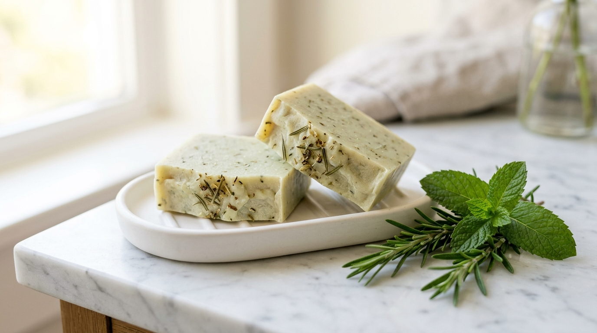

Before I made my first batch of soap, I thought making soap from scratch required a giant cast-iron cauldron in the backyard like something out of a pioneer movie. As it turns out, making cold-process soap takes about an hour in a regular kitchen using a digital food scale, a stick blender, and ingredients you probably already recognize.
Here is the exact 5-step process I follow whenever I make a weekend batch, explained without the heavy textbook jargon.
Step 1: Picking the Right Mix of Plant Oils
Every bar of handmade soap starts as a bowl of everyday plant oils and butters. Each oil brings a different personality to the finished bar:
- Olive Oil (about half the recipe): Makes the bar super gentle and conditioning so your hands never feel tight.
- Coconut Oil (about a quarter): Gives you big, fluffy bubbles that rinse off clean.
- Shea Butter (the rest): Adds a rich, lotion-like feel and keeps the bar firm in the shower dish.
I melt the solid coconut oil and shea butter gently on the stove, then stir in the liquid olive oil until the whole pot is warm—right around 100°F (just slightly warmer than bathwater).
Step 2: The "Saponification" Trick (Turning Oil Into Soap)
Obviously, if you wash your hands with olive oil alone, you just end up with greasy hands. To transform liquid oils into solid bar soap, soapmakers mix in water dissolved with a precise amount of sodium hydroxide (also called lye).
The moment the lye water meets the warm plant oils, a natural reaction called saponification starts. The oil molecules and the lye lock together and transform into two completely new things: gentle soap and natural moisturizing glycerin.
Step 3: Stick-Blending Until It Looks Like Vanilla Pudding
Once I pour the water mixture into the warm oils, I use an ordinary handheld immersion blender to mix them together. In about ninety seconds, the clear oils turn creamy and thick—just like warm vanilla pudding or pancake batter.
Soapmakers call this stage "trace" because when you drizzle a little bit of soap off the blender, it leaves a visible trail on top before sinking back in. That means the mixture is thick enough that any oats, herbs, or clays we stir in next won't just sink to the bottom of the mold.
Step 4: Stirring in Oats, Honey, Clays & Essential Oils
This is the fun part where you get to customize the batch. Once the soap batter reaches that pudding stage, I stir in natural add-ins for scent, color, and texture:


After stirring in the goodies, I pour the thick batter into a rectangular wooden box lined with parchment paper, wrap a towel over the top to keep it cozy, and let it rest overnight. By the next morning, the liquid batter has hardened into a solid block that looks just like a loaf of pound cake.
Step 5: Slicing the Loaf & the 6-Week Snooze
About 24 hours after pouring, I pop the solid block of soap out of the wooden mold and slice it into thick individual bars using a wire cutter.

Even though the soap is completely safe to touch the day after you cut it, a fresh bar still has a lot of water inside. If you took it straight into the shower, it would melt away in a week.
By lining the bars up on a wooden rack for 4 to 6 weeks, all that extra water slowly evaporates into the air. The bars become rock-solid, mild, and long-lasting, and the lather turns super creamy. Once the six weeks are up, they are ready for the shower sink—or ready to hand out to friends who have forgiven me for the burnt-toast candle incident!
← Back to Christian Moreno's Soapmaking Blog Home · Subscribe via RSS